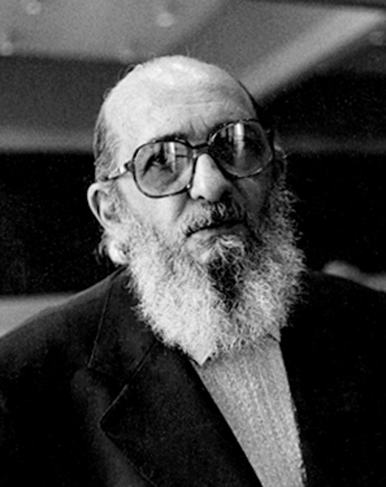
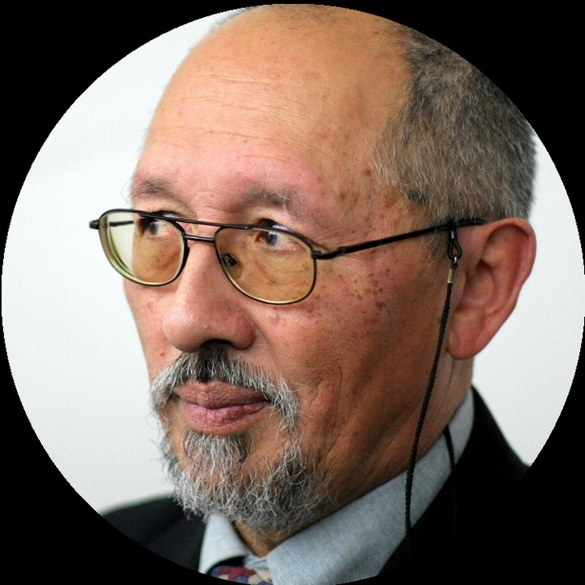

Paulo Freire
Pedagogía del oprimidoSiglo XXI Editores, 2005
Une reflexión, diálogo y acción situada para que las personas afectadas participen en comprender y transformar el problema.
La portada definitiva aprobada se incorpora al exportar el PDF final.
Este espacio es una reserva de paginación; no es una nueva portada.
Observar el trabajo invisible
Ruta de lectura: el núcleo prepara el producto de esta nota e incluye el ejemplo resuelto. La extensión profundiza el marco. Glosario y referencias quedan disponibles para consulta. Los tiempos dependen del ritmo y los conocimientos previos.
Nota. SIN NUM. identifica los aparatos de orientación y referencia que no integran la secuencia argumental.
Seis voces principales para ampliar, contrastar y discutir esta lectura.

Une reflexión, diálogo y acción situada para que las personas afectadas participen en comprender y transformar el problema.
Vincula lenguaje, compromisos y tecnología para observar cómo una organización promete, coordina y repara acciones.
Muestra que la acción situada adapta los planes y que el trabajo real nunca cabe por completo en un procedimiento.
Propone comprender el trabajo en contexto antes de traducir observaciones en requisitos y decisiones de diseño.

Desplaza la atención del error aislado hacia las adaptaciones cotidianas que sostienen el desempeño.
Ayuda a reconstruir por qué una acción parecía razonable en su contexto antes de atribuir culpa retrospectiva.
N08 no resume estas fuentes ni las convierte en una receta. Las pone en tensión para construir juicio profesional.
¿Qué necesitamos mirar para descubrir las tareas, decisiones y arreglos que mantienen un servicio funcionando, pero no aparecen en sus pantallas ni en sus procedimientos?
Si sólo se modela lo prescripto, se automatiza una ficción.
Imaginemos un puente levadizo que conecta una ciudad con su puerto. Su manual describe una secuencia clara: recibir un aviso, detener el tránsito, comprobar las condiciones de seguridad, elevar el puente, dejar pasar la embarcación, bajarlo y reabrir la circulación. Un tablero registra los estados. Desde una oficina, parece una operación que podría automatizarse siguiendo esos pasos.
En esta historia ficticia llega un equipo para estudiar esa posibilidad. Tiene registros y sensores. Quiere reducir la interrupción del tránsito. En la primera reunión pregunta cuánto dura un ciclo. El operador responde que suele llevar entre ocho y doce minutos. La conversación pasa enseguida a motores y programación.
Una investigadora pide observar un turno. En el primer aviso, el operador mira por una ventana y consulta al muelle antes de iniciar la secuencia. Un remolcador todavía está corrigiendo la posición de una barcaza. Cerrar la avenida en ese momento prolongaría innecesariamente la espera. El aviso digital informa que se acerca un barco, pero no describe toda la situación.
Más tarde, el operador presta atención a un punto ciego de las cámaras. Hay una parte de la circulación que no puede comprobar sólo desde la pantalla. Esa verificación adicional no aparece con claridad en la documentación del equipo de modernización. El proyecto estaba por quitar una intervención humana sin haber identificado qué función cumplía.
Después aparece una discrepancia en un indicador. La libreta del turno conserva episodios similares asociados a humedad. El tablero muestra alertas separadas; la libreta permite reconocer una repetición. La operación depende de conocimiento local sobre una falla todavía no resuelta. Eso es información importante para rediseñar, no una razón para dar por seguro cualquier arreglo del operador.
También hay una escena menos visible. El operador escucha por radio que una embarcación turística se atrasará. Advierte que su paso puede coincidir con un horario de tránsito intenso y avisa a quienes coordinan la circulación. No acelera el mecanismo del puente. Ayuda a reducir las consecuencias del cierre sobre otras actividades de la ciudad.
Al terminar el turno, el equipo tiene una imagen más completa. No encontró sólo una persona ejecutando siete instrucciones. Encontró verificaciones, memoria de fallas, interpretación de señales y coordinación con otros actores. El procedimiento no era falso. Dejaba afuera parte del trabajo necesario para aplicarlo en situaciones concretas.
Ahora aparece otra tentación: declarar que todo lo que hace el operador es valioso y debe conservarse. Tampoco sería correcto. Un control que depende de una persona experimentada puede fallar cuando esa persona falta. Una libreta puede ayudar hoy y esconder una deuda de mantenimiento. El objetivo no es copiar cada gesto ni reemplazarlo todo: es comprender qué función cumple y cómo sostenerla mejor.
La pregunta del proyecto cambia. Ya no es solamente cómo automatizar movimientos. También es cómo detectar lo que los sensores no ven, representar una duda, reconocer fallas repetidas, coordinar impactos y conservar una forma efectiva de detener la operación. Algunas respuestas serán técnicas; otras requerirán reglas, recursos y responsabilidades.
Muchos sistemas de información se parecen a este puente. La pantalla muestra una parte del trabajo. El resultado también depende de personas que completan información, interpretan una excepción, verifican una promesa o reparan lo que salió mal. N08 enseña a mirar esa parte sin confundirla automáticamente con desperdicio, heroísmo o incumplimiento.
El procedimiento no contiene todo lo que hace falta para que el servicio funcione. Describe una forma esperada de trabajar. La situación real agrega interrupciones, diferencias entre casos, información incompleta y decisiones que alguien debe resolver. Observar permite conocer ese trabajo antes de cambiarlo.
Una recepcionista puede consultar una planilla después de mirar el sistema. Desde afuera, parece una duplicación. Tal vez la planilla repite datos sin necesidad. Pero también puede conservar una restricción que el sistema pierde o servir como respaldo durante una caída. Ver la acción no alcanza para saber su función. Hay que investigar qué permite detectar, decidir o evitar.
Tampoco toda diferencia con el procedimiento es una buena adaptación. Compartir una credencial puede permitir trabajar durante un turno y, al mismo tiempo, impedir saber quién hizo cada operación. El problema no se resuelve celebrando el atajo ni bloqueándolo sin ofrecer una alternativa. Necesitamos conservar la capacidad de operar y reemplazar el mecanismo que introduce riesgo.
Por eso observamos acciones, contexto y consecuencias. Separamos lo que vimos de lo que suponemos y buscamos otros episodios que ayuden a revisar la interpretación. Una visita no revela todo el sistema. Puede producir una explicación útil si declara qué cubrió, qué no y para qué decisión alcanza.
En Hotel Horizonte, seguir una reserva permite ver cómo se conectan pantallas, llamadas, notas y decisiones entre áreas. Un estado puede estar técnicamente actualizado y no significar lo mismo para quien lo produjo y para quien debe actuar. Mejorar la velocidad de transmisión no resolvería por sí sola esa diferencia.
El propósito final es rediseñar con conocimiento del trabajo. Antes de eliminar un paso, sabemos qué función perderíamos. Antes de automatizarlo, comprobamos quién se hará cargo de verificar, detener y reparar. N09 continuará el recorrido para estudiar cómo se vive ese servicio y qué personas encuentran más dificultades para acceder o usarlo.
![Separar lo que pasó de lo que creemos que significa ayuda a investigar mejor. Contexto y evento Dónde, cuándo y en qué condiciones ocurrió. Registrá la escena antes de atribuir una causa. Interpretación e incertidumbre Qué explicación proponemos y qué falta saber. La interpretación es una hipótesis, no el hecho observado. Contraste Otras personas, otros rastros y nuevos episodios. Buscá qué confirma o contradice esa interpretación. Función y consecuencia Para qué sirve la práctica y qué efectos produce. Algo incómodo puede estar protegiendo una condición necesaria. Decisión Conservar, cambiar o hacer una prueba. Volvé a observar el resultado de esa decisión. ¿Otra persona puede distinguir en el registro qué vimos y qué estamos suponiendo?](diagrams/N08-mapa-legible.svg)
N07 produjo relatos sobre llegadas concretas, explicaciones posibles y discrepancias. Entre ellas: qué significa una habitación lista, qué se verifica fuera del PMS y por qué algunas llegadas con estados parecidos se resuelven rápido. N08 toma esas preguntas y observa la actividad mientras ocurre.
No lo hace porque mirar sea siempre más verdadero que escuchar. La observación muestra acciones y secuencias que alguien puede no recordar o considerar importantes. La entrevista ayuda a comprender su significado. Una persona puede abrir una planilla y no explicar espontáneamente para qué: lo hace todos los días y le parece obvio.
Si el relato dice que una garantía siempre se revisa, pero observamos tres casos en que no ocurre, la primera conclusión no debe ser que la persona mintió. Puede haber condiciones diferentes: otro canal de venta, una autorización previa, más presión o una regla que el relato no distinguió. La discrepancia sirve para formular una pregunta más precisa.
Un requisito puede estar perfectamente escrito y partir de una comprensión equivocada. «Cuando Housekeeping marque lista la habitación, volverla disponible» parece claro. La observación puede mostrar que terminar la limpieza, comprobar una reparación y autorizar la asignación son hechos distintos. Automatizar la frase sin distinguirlos haría más rápida una decisión que todavía no está bien definida.
En una demostración, la llegada al hotel parece sencilla: buscar reserva, comprobar identidad y garantía, confirmar habitación y entregar acceso. El recorrido puede durar dos minutos porque todo está preparado. Sirve para probar el caso esperado, no para describir toda la operación.
En un turno real, Recepción puede buscar el correo de una promoción, aclarar una tarifa, guardar equipaje, consultar una restricción y pedir autorización. Algunas tareas ocurrieron antes de la llegada; otras continúan después de que la pantalla muestra el ingreso como terminado. Si sólo medimos la interacción digital, esas tareas desaparecen del análisis.
Supongamos que el PMS registra un ingreso a las 15:03, pero a las 15:18 Recepción todavía está resolviendo una garantía y una condición comercial. El evento técnico terminó. El servicio no necesariamente quedó resuelto. Debemos definir qué resultado estudiamos: completar un registro o permitir que la persona ingrese bajo las condiciones acordadas.
Podemos seguir a una persona para comprender sus interrupciones y decisiones. También podemos seguir una reserva o una habitación a través de varias áreas. La primera mirada da profundidad sobre un puesto; la segunda muestra dependencias. Combinarlas evita atribuir a una sola persona un resultado producido entre varias.
Reducir treinta segundos de pantalla puede ser útil. Pero no debemos anunciar que resolvimos la espera si siguen existiendo quince minutos de autorizaciones y comprobaciones fuera del sistema. La mejora debe evaluarse con relación al resultado, no sólo al tramo más fácil de medir.
Una organización puede contar cómo funciona un servicio, escribir cómo debe funcionar y realizarlo de una manera que agrega ajustes. Nuestra investigación construirá además su propia descripción. Conviene distinguir esas cuatro versiones para no confundir ninguna con el conjunto completo.
El trabajo imaginado es cómo creemos que funciona la operación. Puede aparecer en una presentación de Dirección: «El huésped confirma, el sistema asigna y Recepción entrega». Ayuda a comunicar una idea general, pero puede ocultar excepciones y apoyos necesarios.
El trabajo prescripto es lo que las reglas y procedimientos indican hacer. Distribuye responsabilidades, orienta capacitación y establece controles. No es inútil porque no describa todo. Su límite es que no puede anticipar cada combinación de circunstancias.
El trabajo realizado es lo que efectivamente ocurre con los recursos, señales y presiones de ese momento. Incluye consultar, esperar, cambiar una prioridad y reparar una diferencia. No significa que todo esté bien hecho: simplemente es la actividad que debemos comprender.
El trabajo revelado es la parte que logramos reconstruir mediante la investigación. Si observamos un turno diurno, con baja demanda y una supervisora experimentada, no vimos automáticamente lo que ocurre de noche o cuando faltan personas. Reconocer esta cuarta versión evita presentar nuestro informe como «la verdad del hotel».
Hollnagel (2017) trabaja la diferencia entre lo imaginado y lo realizado para comprender cómo se sostienen resultados bajo variación. Suchman (2007) muestra que un plan orienta la acción, pero no determina por adelantado cada respuesta a una situación. Ambos enfoques ayudan a usar la diferencia entre regla y práctica como pregunta, no como veredicto.
Si el procedimiento exige una comprobación importante y observamos que se omite, eso no vuelve opcional el control. Hay que investigar por qué se omite, qué riesgo genera y cómo hacerlo viable. Comprender la conducta y autorizarla son decisiones diferentes.
Un sistema puede registrar que una habitación se reasignó sin mostrar las seis llamadas necesarias para lograrlo. Puede mostrar un reclamo cerrado sin registrar el esfuerzo de explicar y reparar una promesa. Puede recibir un dato correcto sin mostrar quién detectó y corrigió antes tres inconsistencias.
Star y Strauss (1999) estudian cómo ciertas contribuciones se vuelven visibles y otras quedan en silencio. No depende solamente de que existan herramientas para registrarlas. También influye qué actividades considera importantes la organización, quién las realiza y qué categorías usa para reconocerlas.
Podemos buscar seis funciones frecuentes. La articulación hace que tareas separadas encajen: avisar un cambio de prioridad para que otro equipo no trabaje sobre un plan anterior. La verificación comprueba si un estado es confiable antes de actuar. La anticipación detecta una condición antes de que se convierta en incidente.
La reparación resuelve consecuencias de una falla: corregir información, restablecer un servicio o atender a la persona perjudicada. La traducción conecta palabras, identificadores y criterios distintos. El cuidado incluye explicar, acompañar y reducir daños que no desaparecen con una actualización de pantalla.
Estas palabras nombran tareas que podemos reconocer. No hace falta memorizarlas para empezar a observar. Sí conviene preguntarnos quién las hace hoy y quién las hará después de un cambio. Eliminar una llamada puede eliminar ruido o puede cortar la única forma de comunicar una restricción.
Por ejemplo, Housekeeping llama tres veces a Recepción. Las dos primeras consultas pueden referirse al avance de la limpieza. La tercera advierte que persiste un olor que impide asignar la habitación. Sustituir las tres por una única notificación de «limpieza finalizada» perdería una diferencia decisiva. El problema de diseño no es sólo transmitir más rápido.
No toda práctica distinta del manual merece la misma respuesta. Puede compensar una herramienta incompleta, sostener un control, eludir una obligación o ser una costumbre que ya perdió sentido. Para distinguirlas necesitamos contexto y consecuencias.
Dekker (2014) cuestiona las explicaciones que terminan al nombrar un error humano. Decir quién ejecutó la última acción puede ser necesario, pero no explica por qué esa acción parecía razonable o posible. Hay que mirar información disponible, presión, recursos, reglas y autoridad.
Supongamos que un turno comparte una credencial porque las altas individuales demoran. Así logra operar, pero pierde identificación de acciones y aumenta exposición. La función que debemos preservar es el acceso autorizado durante el turno, no la contraseña compartida. El rediseño necesita resolver el alta y una contingencia apropiada, junto con la transición fuera de la práctica riesgosa.
La deriva ocurre cuando pequeños ajustes van debilitando una protección. Primero se omite una verificación por una urgencia; después porque el caso parece conocido; finalmente se convierte en la manera habitual. Cada paso puede parecer menor. Juntos cambian el riesgo sin que haya existido una decisión única y explícita de retirar el control.
Que muchas operaciones hayan terminado bien no prueba que esa protección sea innecesaria. Tal vez funcionaron por baja demanda, experiencia o ayuda extraordinaria. Necesitamos estudiar éxitos y fallas para saber qué condiciones sostienen el resultado y cuáles podrían desaparecer.
Antes de conservar o retirar una adaptación, podemos hacer seis preguntas: qué detecta, qué decisión permite, qué excepción resuelve, qué evidencia conserva, quién depende de ella y qué riesgo introduce. La respuesta ayuda a conservar su función útil sin convertir su forma actual en una obligación permanente.
HH-08 toma las preguntas de N07 y define qué observará: una reserva desde la llegada hasta que el huésped pueda usar una habitación adecuada o se acuerde una alternativa. Esta unidad permite conectar varias áreas sin transformar al recepcionista en la supuesta causa de todo.
El equipo compara dos explicaciones. Una sostiene que la espera depende principalmente de estados que se actualizan tarde. La otra propone que las áreas interpretan de modo diferente el mismo estado o no tienen autoridad para decidir con él. Ambas pueden intervenir, pero necesitan evidencia distinta.
Para examinarlas registraremos cuándo aparece la información, qué se consulta después, qué decisión sigue bloqueada y cómo se resuelve. Mirar sólo pantallas no alcanza. También importan llamadas, notas, mensajes, esperas y verificaciones.
Se elegirá además una llegada similar resuelta rápido. Si el dato tuvo una demora parecida, pero había una alternativa y una autorización claras, esa comparación puede limitar la explicación técnica. HH-08 empieza con una pregunta concreta; no con una visita indefinida para «ver qué pasa».
Una transferencia entre áreas lleva más que información. Lleva una expectativa sobre lo que otra persona puede hacer con ella. Si Housekeeping informa «lista», Recepción puede entender que ya puede asignar. Pero quizá quien envió el aviso sólo confirmó que terminó la limpieza.
El mensaje puede llegar rápido y sin errores técnicos, mientras la coordinación falla. Hace falta aclarar qué se está afirmando, desde cuándo vale, qué falta y quién responde. Un intercambio de datos correcto no garantiza que la decisión siguiente esté autorizada o sea adecuada.
Strauss (1988) llama trabajo de articulación a lo que permite que actividades distribuidas encajen y se reorganicen ante cambios. En la práctica son cosas como avisar una prioridad, acordar una excepción o conseguir una respuesta antes de que otra tarea avance. A veces se clasifica como tiempo improductivo, aunque sin ese trabajo el servicio no puede terminar bien.
No toda interrupción debe eliminarse. Algunas fragmentan sin aportar; otras llevan una señal urgente que todavía no tiene otro canal. Antes de proponer «cero interrupciones», necesitamos distinguir qué información transportan y qué pasaría si nadie la recibiera.
Una nota junto a una pantalla, el orden de unas tarjetas o una lista visible pueden ayudar a recordar una condición justo cuando importa. Desde afuera parecen detalles menores. Para quien trabaja, forman parte de cómo reconoce qué hacer.
Hutchins (1995) estudia la cognición distribuida: recordar, interpretar y decidir puede depender de varias personas, objetos y representaciones. La idea básica es sencilla: una tarea no se sostiene sólo con lo que sabe un individuo, sino con los apoyos que encuentra y con cómo se coordinan.
Si retiramos una nota porque queda poco prolija, tenemos que saber qué recordaba y a quién. Pasar su texto a una pantalla secundaria quizá conserve las palabras y pierda la función. La nota estaba visible en el momento de decidir; la nueva pantalla requiere recordar que hay que buscarla.
Eso no significa preservar para siempre cada papel. Una lista local puede contener datos que no debería exponer o depender de una actualización poco confiable. El diseño debe trasladar la función a una solución más segura, manteniendo visibilidad, oportunidad y responsabilidad.
Una recepcionista ve que la habitación 512 figura disponible. Recuerda una consulta reciente a Mantenimiento y decide comprobar antes de asignar. La pantalla permite continuar, la fila crece y la supervisora está ocupada. La decisión visible parece pequeña, pero puede evitar un problema o prolongar una espera.
Este ejemplo hipotético muestra una microdecisión: una elección cotidiana que no suele registrarse como decisión formal. Esperar, consultar, cambiar una prioridad o pedir otra verificación son acciones breves que, acumuladas, influyen en calidad y seguridad.
No queremos que cada una requiera aprobación jerárquica. Queremos comprender qué señal usa la persona, qué autoridad tiene y qué consecuencias puede anticipar. A veces quien tiene información no puede decidir y quien puede decidir no está disponible. La persona que finalmente actúa absorbe un riesgo que la organización no reconoce.
Weick y Sutcliffe (2015) prestan atención a señales pequeñas y a la sensibilidad frente a la operación. Ese enfoque ayuda a no llamar ineficiencia a cualquier duda o consulta. También exige verificar: una preocupación no se vuelve correcta sólo por ser prudente. Debe haber una forma de contrastarla y escalarla.
Preguntar «¿por qué no consultó?» es insuficiente si el canal demoraba veinte minutos y nadie estaba autorizado a ofrecer una alternativa. Preguntar «¿por qué no siguió la pantalla?» tampoco alcanza si se sabía que ciertos estados podían ser incompletos. La acción necesita interpretarse dentro de sus condiciones.
Una supervisora conserva una lista privada de habitaciones que requieren comprobación adicional. La lista ayuda, pero sólo ella entiende algunas abreviaturas. Si falta, el turno pierde parte del conocimiento. Si aumenta el volumen, mantenerla le exige quedarse más tiempo.
Llamamos deuda operativa al costo futuro de sostener hoy una capacidad mediante arreglos frágiles: memoria individual, horas extra, contactos personales o comprobaciones que crecen sin límite. No toda lista o coordinación informal es deuda. El problema aparece cuando la organización depende de ella sin reconocerla, apoyarla ni prever cómo reemplazarla.
Podemos buscar señales: preguntar siempre a la misma persona, corregir excepciones sin dejar rastro, tener que conciliar más datos cada semana o completar tareas sólo extendiendo la jornada. Cada señal abre una investigación; ninguna condena por sí sola la práctica.
Una prueba útil para el análisis es imaginar qué pasaría si falta la persona más experimentada, aumenta la demanda o cae el canal informal. No se trata de provocar esas fallas para observarlas. Se trata de identificar dependencias y preparar comprobaciones seguras. ¿Qué decisión quedaría sin responsable? ¿Qué error ya no se detectaría?
La resiliencia es la capacidad de sostener o recuperar un resultado ante variaciones. No debería confundirse con exigir sacrificio permanente a determinadas personas. Un servicio que siempre se salva gracias a alguien que trabaja de más puede estar ocultando una fragilidad, no demostrando una capacidad sostenible.
La observadora escribe: «15:04. Lucía abre el PMS, mira la fila, consulta una planilla y llama a Housekeeping». Eso describe acciones. «Lucía no confía en el sistema» propone una explicación. Todavía falta saber por qué consultó la otra fuente.
Después del episodio podemos preguntar qué buscaba en la planilla y qué habría hecho si ambas fuentes coincidían. Tal vez no estaba verificando el mismo dato. Podría estar consultando una restricción que no aparece en el PMS. El contraste cambia la explicación.
También registramos lo que no pudimos ver: una conversación previa, un aviso por otro canal o el criterio con el que se creó un estado. Esos huecos no se completan con una narración plausible. Se convierten en preguntas o límites del análisis.
No necesitamos una crónica de cada movimiento. Necesitamos eventos relevantes para la pregunta. Si estudiamos discrepancias de habitaciones, importan estados, fuentes, tiempos, autoridad y consecuencias. Medir cada clic puede agregar esfuerzo sin explicar el problema.
| Parte del registro | Ejemplo del hotel | Qué cuidamos |
|---|---|---|
| Contexto | Turno, fila, canal de reserva y apoyos disponibles. | No tratar cualquier condición como habitual. |
| Evento observado | Se consulta una planilla y se realiza una llamada. | No agregar una intención que no conocemos. |
| Interpretación | La planilla podría conservar una restricción. | Presentarla como hipótesis, no como hecho confirmado. |
| Pregunta abierta | ¿Qué información no muestra el PMS? | Mantener alternativas para el contraste. |
| Función | Evitar asignar una habitación con una condición pendiente. | Comprobar qué aporta la práctica. |
| Consecuencia | Se ofrece otra habitación y luego se corrige el estado. | Seguir también el trabajo posterior. |
| Decisión posible | Representar la restricción y definir quién la levanta. | No convertir una observación en requisito automático. |
Los tiempos deben distinguir trabajo activo, espera, interrupción y tarea repetida. Dos episodios de quince minutos pueden ser distintos: uno incluye un control que evita daño; otro repite información perdida. También dos episodios rápidos pueden representar eficiencia o una verificación omitida.
Una ficha identifica el episodio y sus fuentes sin exponer datos innecesarios. Si usamos horarios de distintas herramientas, debemos revisar que sean comparables antes de deducir una secuencia precisa. Un minuto aparente de diferencia puede depender del reloj o de cómo se registró el evento.
Beyer y Holtzblatt (1997) proponen estudiar actividad y contexto mientras el trabajo ocurre. Eso no significa quedarse junto a cualquier persona durante muchas horas y asumir que el tiempo asegura calidad. La selección debe responder a las diferencias que pueden cambiar la explicación.
Podemos comparar turnos, experiencia, volumen, canal, necesidad de asistencia y resultado. Los casos difíciles revelan límites; los casos ordinarios muestran cómo se sostiene el servicio. Si sólo observamos crisis, podemos exagerar la fragilidad. Si sólo miramos el recorrido fácil, podemos diseñar una solución que falle ante cualquier variación.
Hay que declarar qué no se cubrió. No haber observado temporada alta o funcionamiento con una integración caída limita lo que podemos autorizar. Esas condiciones pueden requerir después otras observaciones, reconstrucciones o ensayos, sin presentar esos métodos como si fueran exactamente lo mismo.
Una ronda puede cerrarse cuando permite elegir la próxima prueba y los contrastes pertinentes ya aportan poca variación adicional. No significa que el trabajo quedó conocido para siempre. El personal, la demanda, las reglas y las herramientas seguirán cambiando.
Volvamos a la secuencia de las 15:04. La nota inicial permite localizar el episodio y las fuentes. La observadora no escribe «uso innecesario de planillas» ni «falta de confianza» como diagnóstico. Conserva la consulta como algo que necesita comprender.
Al contrastar después con Lucía, aparece que la planilla conserva una restricción temporal que puede perderse al cerrar un ticket en otra herramienta. El PMS y la planilla no compiten necesariamente por representar lo mismo. Una muestra el estado general; la otra recuerda una condición que afecta la asignación.
El equipo revisa el ticket relacionado y busca otros episodios. Puede resultar que la práctica cumpla esa función sólo en ciertos casos o que también se use para otros fines. No generaliza que toda planilla es un control ni que toda información oficial es insuficiente.
La próxima decisión cambia: antes de eliminar la lista, habrá que comprobar dónde se conservará la restricción, quién podrá modificarla y qué ocurrirá si el intercambio entre herramientas falla. La observación no obliga a conservar el papel. Obliga a no perder la función sin haberla reconocido.
Un blueprint de servicio organiza lo observado en varias capas. En una se sigue lo que hace y ve la persona que recibe el servicio. En otras aparecen la atención directa, el trabajo interno y los apoyos que permiten cumplir. Stickdorn y sus colegas (2018) desarrollan estas herramientas dentro del diseño de servicios.
En el hotel, la huésped recibe una confirmación y se presenta. Recepción consulta y responde. Housekeeping informa limpieza. Mantenimiento conserva restricciones. Comercial definió la promesa. El proveedor transmite ciertos estados. Separar esas capas ayuda a ver qué trabajo interno sostiene cada momento visible.
La línea entre lo visible y lo interno permite hacer una pregunta sencilla: mientras las áreas resuelven una contradicción, ¿qué explicación recibe la huésped? También permite ubicar esperas, responsabilidades y reparaciones que un diagrama de pantallas no muestra.
El mapa no debe mostrar únicamente cómo quisiéramos que funcionara todo. Tiene que distinguir evidencia, supuestos y variaciones. Si cada tarea se convierte en una caja idéntica, sin relación con una pregunta, podemos terminar con un dibujo prolijo que no ayuda a decidir. El propósito no es digitalizar el dibujo: es comprender qué capacidad falta o necesita sostenerse mejor.
Supervisión humana sin tiempo, información, autoridad y alternativa es una ficción.
La observación no entrega requisitos terminados, igual que la entrevista. Primero permite formular una afirmación: en estas condiciones, esta práctica ayuda a cumplir una función y produce estas consecuencias. Después buscamos casos que la apoyen o la contradigan. Recién entonces decidimos qué cambiar.
Si una planilla tiene información más reciente, la alternativa puede ser mejorar la actualización. Si usa una definición diferente, hace falta acordar significados. Si permite a Housekeeping decidir una restricción que el PMS no representa, el cambio involucra autoridad. Si sirve durante caídas, necesitamos una contingencia. «Eliminar la planilla» no distingue ninguno de esos problemas.
Trist y Bamforth (1951) estudiaron cambios técnicos junto con sus consecuencias sobre la organización del trabajo. La perspectiva sociotécnica invita a diseñar ambas cosas en relación: herramientas, coordinación, autonomía y responsabilidades. Optimizar una aplicación no garantiza mejorar el sistema que la utiliza.
Una formulación de diseño podría ser: cuando existan estados contradictorios, mostrar su fuente y momento, impedir una confirmación automática y permitir resolver la discrepancia con autoridad definida. Esa propuesta todavía debe probarse. Es más precisa que «integrar Housekeeping» porque indica qué capacidad se busca y qué no puede perderse.
Copiar la práctica actual tampoco es la única forma de respetarla. Si hoy se necesitan tres llamadas para confirmar una condición, no tenemos que convertirlas en tres pasos digitales obligatorios. La función puede ser verificar información y autoridad. Quizá exista una manera más sencilla y segura de sostenerla.
Si las personas creen que cada adaptación se usará para evaluarlas, pueden mostrar sólo el procedimiento formal. La investigación perderá justamente lo que necesita comprender. Debemos explicar propósito, uso de notas, acceso, conservación y límites antes de empezar.
Aceptar una observación en una relación laboral puede sentirse obligatorio. El equipo tiene que considerar esa presión, minimizar información personal y separar el análisis del sistema de la evaluación individual. No basta con declarar que no habrá consecuencias si después se publican citas identificables o listas de supuestos culpables.
Nuestra presencia también cambia la situación. Si el observador pertenece a Dirección o Tecnología, eso puede influir en lo que se muestra. Permanecer más tiempo no elimina automáticamente el efecto. Conviene registrarlo, contrastar varias fuentes y explicar qué condiciones tuvo la visita.
Si aparece un riesgo inmediato, el protocolo debe indicar cómo actuar. Investigar no autoriza a permanecer pasivo ante un daño evitable. Si intervenimos, lo registramos: el episodio cambió y no puede analizarse como si hubiéramos sido invisibles.
La devolución explica qué observamos, qué no pudimos ver, qué interpretaciones siguen abiertas y qué decisión se propone. Las personas pueden corregir hechos o aportar contexto. Eso no las convierte en jueces únicos de toda conclusión, pero sí evita usar la autoridad del investigador para cerrar una discusión sin evidencia.
Una vez que distinguimos tipos de espera, podemos medirlos. Si los juntamos desde el inicio como «tiempo improductivo», mezclamos una autorización tardía, una falla técnica y una comprobación que evita daño. El número queda claro en apariencia y confuso en su significado.
El promedio tampoco cuenta toda la historia. Un ingreso medio de cuatro minutos puede convivir con casos de treinta. Conviene revisar en qué condiciones aparecen esos extremos y a quiénes afectan. Puede haber diferencias por canal, promoción, necesidad de ayuda o turno. No se deduce la causa sólo por ver la distribución; se vuelve a los episodios para investigarla.
También importa qué queda después del cierre. Si el tablero premia cerrar rápido, el personal puede terminar el registro antes de resolver el servicio o trasladar correcciones a otro canal. Debemos observar el efecto de la métrica, no asumir que sólo describe una actividad que permanece igual.
La demanda de falla es trabajo que aparece porque una necesidad anterior no quedó bien resuelta. Una llamada para corregir una confirmación equivocada no representa necesariamente nueva demanda del servicio. Puede ser reparación de una falla previa. Si contamos ambas igual, el aumento de actividad puede ocultar un deterioro.
La entrada Failure Demand, de Vanguard, permite rastrear el concepto desarrollado por John Seddon. Pedir alojamiento es demanda del servicio; volver para corregir una confirmación equivocada es demanda generada por la falla anterior. No toda consulta adicional pertenece a esta segunda clase.
La combinación útil va en los dos sentidos: observar ayuda a definir categorías; los datos ayudan a estimar su alcance; las diferencias inesperadas llevan a observar otra vez. Un episodio no permite estimar una frecuencia general. Una cifra sin categorías claras puede medir con precisión algo distinto de lo que importa.
Una herramienta puede redactar una respuesta en segundos y dejar a una persona varios minutos de comprobación. Puede resolver consultas fáciles y concentrar en el equipo humano las más difíciles. Puede recomendar una habitación sin representar una restricción que Recepción conoce. Medir sólo la generación del texto deja fuera ese trabajo.
Gmyrek y sus colegas (2025), en su estudio para la OIT sobre exposición ocupacional a IA generativa, distinguen exposición de sustitución total. El enfoque permite pensar en cambios de tareas, no sólo en puestos que desaparecen o permanecen. Para N08, la pregunta práctica es qué actividad nueva surge y quién la asume.
En un ejemplo del hotel, un asistente propone compensar con desayuno una habitación que no está disponible. Lucía advierte que la reserva ya incluía desayuno y busca una alternativa adecuada. El texto se produjo rápido, pero la decisión exigió conocer condiciones comerciales, interpretar el problema y contar con autoridad para reparar.
La observación debe seguir esas correcciones. Si el tablero atribuye todo el tiempo ahorrado a la redacción y no registra verificación, excepciones o reparación, presentará una mejora incompleta. También debe buscar errores que nadie detectó en el momento: un registro de incidentes sólo contiene los incidentes reconocidos.
El perfil de IA generativa de NIST, elaborado por Autio y sus colegas (2024), ayuda a organizar riesgos según contexto, actores e impactos. La encuesta estudiada por Milanez, Lemmens y Ruggiu (2025) para la OCDE incorpora cuestiones de responsabilidad, comprensión y condiciones laborales en la gestión algorítmica. Estos aportes orientan qué mirar, no predeterminan el resultado de cualquier implementación.
«Hay una persona revisando» no demuestra por sí solo que exista control. La persona necesita tiempo, información, conocimientos, autoridad para contradecir y una alternativa cuando la recomendación no sirve. Si sólo puede aceptar para cumplir una meta, la revisión puede ser una formalidad.
También necesita saber qué está revisando. Una respuesta redactada con seguridad puede ocultar que el dato está desactualizado o que una condición no fue considerada. Si no se puede consultar la fuente, la supervisión queda limitada desde el diseño.
La retoma de control ocurre cuando una persona recupera capacidad efectiva de decisión desde una automatización. No es sólo mostrar un botón. Hay que saber cómo se detiene la acción, qué estado queda, qué información recibe la persona y cómo continúa el servicio. Si nada de eso está preparado, la posibilidad de intervenir puede ser más aparente que real.
Podemos observar qué sucede cuando alguien rechaza una recomendación: si se registra la razón, si recibe apoyo, si puede ofrecer otra respuesta y si la organización aprende del desacuerdo. Contar clics de aceptación no permite inferir confianza bien fundada. La aceptación puede reflejar utilidad, prisa, presión o falta de alternativas.
La gestión algorítmica usa sistemas para asignar, supervisar o evaluar trabajo. Cuando aparece, también debemos revisar qué incentivos crea: si acelera cierres, concentra casos difíciles o vuelve costoso contradecir. La tecnología cambia no sólo tareas, sino las condiciones bajo las cuales las personas deciden.
El episodio de HH-08 permite seguir una consecuencia completa. A las 13:55, Mantenimiento registra una pérdida intermitente en el baño de la habitación 512. El aviso queda en otra herramienta y no produce un bloqueo en el PMS. A las 14:38, Housekeeping marca la habitación como lista porque terminó la limpieza.
A las 15:02, Recepción la asigna. A las 15:40, el huésped llama por agua en el piso. Hay que trasladarlo y reparar lo ocurrido. Al principio, el reclamo llega a Housekeeping como si hubiera declarado disponible una habitación que no correspondía.
Si miramos sólo el último estado visible, parece una equivocación de limpieza. Al reconstruir, distinguimos tres acciones: Housekeeping confirmó limpieza, Mantenimiento registró un problema y Recepción interpretó «lista» como asignable. Los datos están repartidos y la diferencia entre estados no está bien representada.
El episodio no elimina responsabilidades. Permite formularlas mejor. Hay que decidir qué eventos crean una restricción, quién debe registrarla, quién puede levantarla y qué controles evitan que una habitación se asigne mientras sigue pendiente. No alcanza con pedir que cada persona «preste más atención».
Al observar casos siguientes aparecen controles informales. Una supervisora consulta verbalmente ciertas reparaciones; Recepción llama si recuerda que una habitación estuvo fuera de servicio; el turno nocturno conserva una lista. Estos recursos reducen riesgo, pero dependen de memoria y disponibilidad.
Eliminar llamadas y listas antes de reemplazar su función podría empeorar la situación. Integrar herramientas puede ayudar, pero primero debemos definir qué información conserva cada estado y qué decisión habilita. Si la integración se interrumpe, el hotel necesita una forma de reconocer la incertidumbre, limitar la asignación y resolverla.
El plan del caso sigue doce habitaciones con registros de mantenimiento, compara resultados distintos y observa el cambio de turno. Doce es el alcance del ejercicio, no una muestra suficiente para cualquier conclusión. Se reconstruyen tiempos entre herramientas y se ensaya una señal común con los actores pertinentes.
La prueba no se aprueba sólo porque aparece un indicador en pantalla. Debe comprobar que se distingue limpieza de aptitud técnica y de asignación, que las responsabilidades son comprensibles y que una restricción relevante no se pierde ante una falla de intercambio. El siguiente paso dependerá de esa evidencia.
Consideremos un ejemplo hipotético de diseño de sistemas, no una indicación sobre práctica clínica. Un hospital analiza incorporar lectura de códigos para apoyar verificaciones relacionadas con medicación. El proyecto supone inicialmente que una comprobación manual es redundante porque el sistema leerá los identificadores.
La observación puede mostrar que el personal utiliza esa instancia para revisar también cambios y condiciones que no están representados por el código. Eso obliga a investigar qué parte del control cubre la tecnología y qué parte sigue necesitando otro tratamiento. Una coincidencia de identificadores no demuestra por sí sola que se hayan contemplado todas las condiciones relevantes.
También habría que observar el entorno de uso: disponibilidad, interrupciones, alertas, información actualizada y trabajo de excepción. Una herramienta puede fortalecer una defensa y crear otras tareas. No corresponde asumir que toda adaptación es resistencia ni que cualquier práctica observada es segura.
No se transfiere una solución del hotel al ámbito clínico. Las decisiones clínicas y los cambios de controles requieren protocolos, especialistas y evaluación de seguridad propios del dominio. Lo que se transfiere es una pregunta metodológica: antes de retirar una tarea, ¿sabemos qué función cumple y con qué evidencia se la reemplazará?
El ejemplo marca un límite importante de N08. Comprender un mecanismo no autoriza a intervenirlo sin la competencia ni la autoridad necesarias. La observación puede revelar preguntas decisivas; no reemplaza las evaluaciones especializadas que esas preguntas exigen.
Antes de ir al lugar de trabajo, definimos la duda y la decisión que podría cambiar. Elegimos qué seguiremos: una persona, un episodio, un objeto o una transferencia. Seleccionamos condiciones pertinentes y explicitamos qué no podremos cubrir.
Acordamos acceso, tratamiento de datos y límites de la observación. Preparamos una ficha sencilla, identificadores y una manera coherente de registrar tiempos. También decidimos cómo actuar ante un riesgo inmediato y cómo evitar que la observación interfiera innecesariamente con el servicio.
Durante el trabajo separamos descripción, interpretación y preguntas. Seguimos los objetos y cambios relevantes. No atribuimos intenciones sin contrastar ni convertimos cada acción en una anotación. Si aparece algo inesperado, podemos seguirlo sin perder el propósito de la investigación.
Después recuperamos significado con quienes participaron y contrastamos con registros, documentos y otros episodios. Formulamos explicaciones rivales y señalamos qué evidencia apoya o limita cada una. La devolución permite corregir hechos, discutir categorías y aclarar qué consecuencias tendrá el análisis.
Finalmente conectamos los hallazgos con opciones de cambio: qué conservar, qué sustituir, qué probar y qué volver a observar. El protocolo también debe prever una revisión después de intervenir. Si desaparece una tarea visible, necesitamos saber si otra persona absorbió una nueva carga o si se perdió una defensa.
No es una receta que garantice conocer todo. Es una forma de conservar propósito, protección y una base revisable. Adaptar el registro puede ser razonable; perder la distinción entre lo observado y lo supuesto debilita cualquier conclusión.
METSI · N08 · Aplicación resuelta · Núcleo
Blueprint mínimo, construido a partir de la tercera aplicación de HH-08. E indica información narrada en el caso didáctico; P señala una propuesta por probar. No es observación de un hotel real ni describe una solución ya implementada.
| Capa | Antes de asignar | Asignación | Falla y reparación |
|---|---|---|---|
| Huésped | E: el caso no describe qué aviso recibe antes de llegar. | E: recibe la habitación 512. | E: llama a las 15:40 por agua en el piso; necesita traslado. |
| Atención visible | E: no se narra una advertencia previa al huésped. | E: Recepción asigna a las 15:02. | E: hay que trasladar al huésped y reparar lo ocurrido. |
| Trabajo interno | E: Mantenimiento registra la pérdida a las 13:55. | E: Housekeeping marcó «lista» a las 14:38 por limpieza terminada. | E: reconstruir permite separar limpieza, aptitud técnica y asignación. |
| Sistemas y apoyos | E: el aviso queda en otra herramienta y no bloquea el PMS. | E: «lista» se interpreta como asignable; falta representar la restricción. | P: señal común, autoridad para levantar el bloqueo y contingencia si falla el intercambio. |
Ficha de observación: E, Housekeeping marca «lista» a las 14:38 y Recepción asigna a las 15:02. Interpretación: se está leyendo limpieza como aptitud para asignar. Pregunta: ¿qué vio Recepción y qué restricción podía consultar? Próximo contraste: reunir ticket, estados disponibles y explicación de quienes actuaron. P, representar la restricción y definir quién puede levantarla; probarlo antes de retirar listas o llamadas.
Para volver al caso: Movimiento 3 · Transformar lo observado sin destruir su función.
Observar el trabajo también permite encontrar oportunidades antes de que alguien llegue con una solución encargada.
Una persona llama para preguntar si su constancia ya está lista. En la pantalla lee «Completo». En Secretaría todavía falta revisarla y firmarla. La persona de mesa de ayuda conoce la diferencia y la explica por teléfono. Si sólo miramos la pantalla, parece que el trámite terminó. Si sólo escuchamos el llamado, podríamos concluir que hace falta un chatbot. La observación muestra algo más preciso: el mismo nombre sostiene dos significados distintos.
Para saber si fue un episodio aislado, el equipo reconstruye 60 trámites cerrados durante cuatro semanas. En 24 hubo al menos un contacto con mesa de ayuda. En 16 de esos 24, antes del contacto se había mostrado «Completo» mientras la revisión seguía pendiente. Los otros ocho contactos tuvieron motivos distintos.
La unidad es el trámite, desde que entra la solicitud hasta que se comunica la resolución. Dos llamados por un mismo trámite no se cuentan como dos trámites. Se cubrieron ambos turnos, pero la selección no representa a toda la facultad. Estas cifras son ficticias y sirven para practicar el razonamiento, no para estimar una tasa real.
El método en uso
El registro separa dos columnas. En hechos anota la hora, el estado que vio la persona, el estado de Secretaría, el contacto y el siguiente paso. En interpretaciones anota hipótesis: tal vez «Completo» induce a pensar que la constancia se puede retirar; tal vez pesan más la demora, un aviso que no llegó o una dificultad de acceso. Que 16 trámites compartan una secuencia no prueba cuál de esas explicaciones causó el contacto.
De esa diferencia nace una iniciativa que nadie encargó: averiguar si las personas conocen el estado verdadero y saben qué hacer después. El próximo paso es observar con Secretaría y mesa de ayuda cómo se crea y comunica cada estado, contrastar episodios sin llamado y escuchar a quienes no lograron seguir el trámite.
Si el portal muestra un estado falso, habrá que corregir la fuente de verdad. Si el estado es correcto pero no se entiende, convendrá probar otra explicación. Si la dificultad principal es la demora real, cambiar una etiqueta no alcanzará. Nada de esto autoriza todavía un chatbot, una compra ni una automatización.
N08 deja una descripción más rica de acciones, esperas, apoyos y reparaciones. Permite saber dónde se sostiene una capacidad y qué condiciones la vuelven frágil. Todavía no alcanza para evaluar cómo viven el servicio distintas personas.
Una práctica puede facilitar la tarea del puesto observado y aumentar la carga del huésped. También puede parecer lenta desde Recepción y proteger a alguien de recibir una habitación inadecuada. No debemos convertir inmediatamente una dificultad visible en una conclusión completa sobre experiencia.
HH-08 entrega a N09 puntos concretos: el tramo en que el sistema declara terminado un ingreso pero el servicio sigue abierto; las verificaciones que se repiten; los canales alternativos; las ayudas necesarias; y los casos que concentran esfuerzo. N09 estudiará comprensión, acceso y adopción a lo largo de ese recorrido.
La continuidad importa. Primero reconocimos lo que se hace para sostener el resultado. Ahora necesitamos revisar a quién le permite avanzar, a quién le exige más y a quién deja sin una opción real. Son preguntas relacionadas, pero no equivalentes.
Observar únicamente el recorrido fácil. Una demostración sin excepciones ayuda a conocer una parte, no toda la operación. El diseño necesita saber qué ocurre cuando cambia una condición relevante.
Explicar cualquier diferencia como culpa individual. Antes de concluir, hay que reconstruir recursos, información, reglas y autoridad. Nombrar a la última persona que actuó no explica el sistema.
Celebrar todos los atajos. Una adaptación puede evitar una interrupción y crear riesgo. Hay que distinguir la función que vale la pena conservar del mecanismo que debe reemplazarse.
Atribuir motivos a partir de una acción. Consultar una planilla no prueba desconfianza ni resistencia. La interpretación necesita preguntas y contraste.
Eliminar una tarea porque no aparece en el procedimiento. Quizá sea una corrección innecesaria, pero también puede sostener una capacidad que el diseño no contempla. Primero investigamos su función.
Medir sólo lo que sucede en la pantalla. La reparación posterior y la coordinación entre áreas pueden concentrar gran parte del trabajo. Deben formar parte del alcance cuando afectan el resultado estudiado.
Usar la observación como vigilancia encubierta. Cambia lo que las personas muestran, puede exponerlas y deteriora la confianza. Propósito, acceso y devolución deben ser claros.
Generalizar desde un único turno. Una observación situada necesita declarar su alcance. Los casos no observados pueden cambiar la explicación y limitar el siguiente paso.
No volver después del cambio. Automatizar una tarea puede crear revisión, excepciones y nuevas dependencias. La mejora debe comprobarse sobre el trabajo resultante, no sólo sobre la función instalada.
La consecuencia profesional es concreta: diseñar a partir de una imagen incompleta puede producir un sistema técnicamente correcto que empeore el servicio. Observar bien no garantiza acceso total ni neutralidad. Permite tomar decisiones con una descripción más rica y con límites que otras personas puedan revisar.
La observación requiere tiempo y puede alterar la conducta. No accede directamente a intenciones y hay eventos poco frecuentes que quizá no aparezcan durante la visita. Entrevistas, registros y simulaciones pueden complementar, pero no deben presentarse como equivalentes sin explicar sus diferencias.
En operaciones críticas puede haber restricciones de acceso o necesidad de intervenir ante un riesgo. El plan debe respetarlas. No corresponde poner en peligro una actividad para obtener un episodio más interesante ni suspender controles porque la investigación quiera ver qué ocurre.
Hacer visible trabajo informal puede reconocer aportes y también exponer vulnerabilidades o personas. Los hallazgos necesitan cuidado de acceso y una comunicación que no convierta el informe en un catálogo de culpables. La transparencia no exige distribuir indiscriminadamente toda la información.
Comprender una práctica no obliga a conservarla. Puede depender de sacrificio, afectar privacidad o trasladar carga a otra área. Tampoco documentarla resuelve su fragilidad. La organización debe decidir qué apoyo, cambio o control hace falta y comprobar sus efectos.
Ningún estudio produce el mapa definitivo del trabajo. Cambian demanda, personal, herramientas e incentivos. El resultado de N08 es una explicación suficiente para una decisión concreta, con señales que indiquen cuándo volver a mirar.
Freire y Fals Borda permiten revisar la relación entre quien investiga y quien trabaja. No observamos personas como si fueran objetos silenciosos. Necesitamos que puedan explicar y discutir lo que interpretamos, además de conocer para qué se utilizará la información.
En Hotel Horizonte, la devolución puede cambiar una conclusión. El equipo interpreta que una planilla duplica información; quienes la usan muestran una restricción que el PMS no conserva. La conversación no reemplaza lo observado: permite comprender mejor su función y diseñar el siguiente contraste.
Flores ayuda a mirar los compromisos entre áreas. Un aviso de «lista» no es sólo un dato: puede habilitar una promesa a otra persona. Observar qué acción sigue a ese aviso permite investigar si quienes lo producen y reciben entienden el mismo compromiso.
Scolari (2018) amplía la mirada sobre las interfaces hacia las relaciones que organizan. Ricaurte (2019) invita a preguntar qué experiencias hacen visibles las categorías y cuáles dejan afuera. Si el tablero cuenta asignaciones pero no reparaciones, ciertos trabajos y consecuencias pierden presencia en las decisiones.
Maturana y Varela ayudan a reconocer la participación de quien observa en la descripción. García (2006) aporta una mirada de sistemas complejos que no reduce el resultado a una pieza aislada. Para N08, ambos aportes refuerzan la necesidad de declarar el recorte y conectar tareas técnicas, organización y experiencia sin suponer que una sola perspectiva lo explica todo.
Estas lecturas dialogan con Suchman, Hutchins y la tradición sociotécnica. No agregan una decoración regional a una técnica ya cerrada. Ayudan a preguntar quién conserva conocimiento, quién puede discutir una interpretación y quién recibe la carga de un cambio. Son preguntas que afectan el diseño de la investigación y sus consecuencias.
El servicio funciona gracias a más actividades de las que muestran sus procedimientos y pantallas. Hay personas que verifican, coordinan, anticipan y reparan. Observar permite comprender esas funciones y distinguirlas de tareas innecesarias o prácticas riesgosas.
Para hacerlo, seguimos episodios, comparamos condiciones y separamos descripción de interpretación. Los relatos, los registros y la observación se contrastan entre sí. La conclusión debe conservar qué vimos, qué suponemos y qué falta comprobar.
HH-08 muestra por qué una habitación limpia no es necesariamente una habitación asignable. El rediseño necesita representar restricciones y responsabilidades, no sólo transmitir estados más rápido. La misma precaución se aplica a la IA: automatizar una acción no elimina automáticamente el trabajo de decidir, verificar y reparar.
N09 continuará con el recorrido vivido. Conocer la operación es necesario, pero todavía debemos examinar si el servicio resulta comprensible y accesible para las distintas personas que lo atraviesan.
Para el encuentro, respondé dos preguntas y prepará una ficha breve de HH-08. Incluí qué seguís, contexto, evento observado, interpretación provisoria, pregunta abierta, función que podría estar cumpliéndose y decisión que cambiaría con la evidencia. La ficha debe permitir distinguir lo visto de lo supuesto.
La ficha solicitada puede apoyarse en las preguntas 2, 3 o 4 y en el mapa resuelto. Si proponés una mejora, indicá primero qué función conservarías y qué evidencia todavía falta. Las demás preguntas permiten ampliar el contraste sin cambiar el producto.